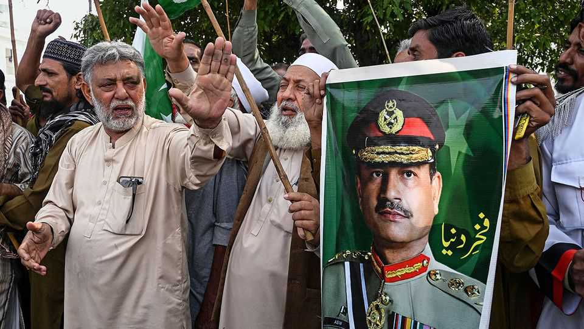

A selfish ploy to break up Pakistan
Its military chief wants lots of small provinces, to fragment the opposition

Oct 8th 2026
IT WAS Philip of Macedon who reputedly coined the phrase “divide and rule”, more than 2,000 years ago. Strongmen ever since have employed the tactic to cement their power. The military man who really rules Pakistan—despite the existence of a president and a prime minister who are both nominally his superiors—seems to have taken the lesson literally.
Field Marshal Asim Munir, the Trump-flattering head of Pakistan’s armed forces, reportedly wants to do away with his country’s four provinces, which date to the creation of Pakistan in 1947. They may be divided into 12 new ones, or perhaps 15, or perhaps even 160 much smaller and less powerful units. These new mini-polities might be ruled by elected chiefs, or by provincial or district assemblies, or by nominees of “the government”: ie, Field Marshal Munir. Although the details have yet to be revealed, it is abundantly clear who will benefit.
In principle the plan has some logic. The existing four provinces are a mixed bag. The most populous, Punjab, has 128m inhabitants, slightly over half the national population. (For comparison, only 12% of Americans live in California, America’s most populous state.) Balochistan, the least populous province, has but 15m people, some 6% of the total. Governance in gargantuan Punjab is suboptimal. This is not merely a polite word for corrupt. People in rural areas must travel for many hours to interact with officialdom and lack basic services: less than a quarter of Punjabis have a reliable supply of safe drinking water at home.
The field marshal says the provinces are too big to be well-run, and that this is a crucial reason why the country is in such a dismal state. He is right that Pakistan is in poor shape, with a growth rate less than half that of next-door India, inflation in double figures and debt-service costs excruciating. But the reasons are complex, and a big share of blame belongs to the army itself. It gorges on taxpayers’ cash, owns huge tracts of the country’s most valuable land and controls businesses that intimidate their competitors. Pakistan has spent more than two-fifths of its existence under direct military rule, and much of the remainder under civilian governments terrified of upsetting the men with guns. The army also has an interest in keeping relations with India hostile, which is good for its budget but terrible for Pakistan. As was said of Freudian psychoanalysis, Pakistan’s armed forces are the problem to which they pretend to be the solution.
Today’s provincial system needs reform. But there are two reasons to be wary of the field marshal’s plans. The first is that in a country with very little pluralism, the big provinces are an essential counterweight to the centre. Punjab and Sindh, a southern province centred on the country’s commercial capital, Karachi, are the fiefs of two long-lived parties, the PML(N) and the PPP, respectively. Even under military dictators, they have preserved alternative centres of power, up to a point. No doubt that is why the field marshal has them in his sights.
The second reason to be wary of the plans is that they were cooked up by Field Marshal Munir. He has been ruthless in consolidating power in his own hands. He has partly co-opted the PML(N) and the PPP, whose de facto leaders now serve as a weak prime minister and an even weaker president. He has thrown Imran Khan, the leader of the third main party, into jail. Protests in support of Mr Khan, a former cricketing superstar and the country’s most popular politician, are met with bans and barricades. TV channels dare not mention his name.
So it seems unlikely that the plan to chop up Pakistan into smaller slices is about making provincial government more responsive to the needs of ordinary Pakistanis. Rather, it is about making it more malleable to the demands of one man. For the good of his country, Field Marshal Munir should retreat. ■